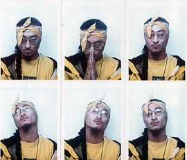

ASIA
Continental
 Ktown213:
Asia, give us your 30 second intro...
Ktown213:
Asia, give us your 30 second intro...ASIA Continental: My name is ASIA Continental (aka the Golden Child). I am the manifestation of APIA Pride. I am a multi-media artist, currently focusing in on Hip Hop (rhyme communication) and spoken word. My Prime Directives include: Advocating the proper representation and respect for those of Asian Pacific
descent; Human Rights Issues; and, the creation of long-lasting bonds among different peoples and cultures. I have co-founded and co-own an entertainment company called OMNIVERSALATA Entertainment, LLC. We have just recently released my debut Hip Hop Maxi-Single, "K-Town" with the bangin’ B-Side track "Passion".
Ktown213: When & how did your fascination with hip hop begin?
ASIA: My fascination with Hip Hop began in about Junior High School. My cousin came to live with us at that time, and he listened to r&b and some rap. I picked up on some of his musical tastes, and eventually, gravitated more towards Hip Hop. I just took it deeper than he did. At about this same time, I was also getting into Malcolm X, and becoming more self-aware about my environment and myself. Hip Hop spoke to me and about the same concerns/issues that I was feeling and interested in such as racism, social injustice, and the basic struggles of life. I’ve always been an artist, and as a result, I began writing my own rhymes and composing music with fellow friends. I love Hip Hop. I am Hip Hop.
Ktown213: Growing up, who did you look up to? Who inspired you?
ASIA: In general, when I was growing up, I looked up to/respected Malcolm X because of his ability to constantly improve himself, and for what he did for his people. He was able to turn his life around, change his lifestyle, and then became warrior for his people with a passion that couldn’t be killed by anyone. To me that was extremely inspirational, and it motivated me to want to do the same for people of Asian Pacific descent. Tupac is another person that I looked up to and inspired me because I saw him as the same passionate warrior for his people as I saw Malcolm X. These people lived, breathed, and died for their cause.
Ktown213: Your debut maxi-single, "K-TOWN" was just released. What made you want to rap about the Koreatown community?
ASIA: In the summer of 1999, I had an internship at the Korean Youth & Community Center (KYCC) in Koreatown, Los Angeles, CA. After hearing a variety of stories and experiences from friends, co-workers, and other sources about 'K-Town,' that weren’t readily known and/or being addressed by both people within the Korean American community and those outside, I felt that some form of communication needed to be put out there about K-Town and the people from and/or who frequent K-Town. One of the best forms of communication is music, and so I decided to write a song about what I had heard, read, and seen. Also, I wanted to acknowledge the experiences and stories of those people that are familiar with K-Town. The song, "K-Town," summarizes all of those stories and experiences from a first person perspective.
Ktown213: Any upcoming events or promos? Where can we see more of Asia Continental?
ASIA: We are currently working on arranging events/promos with various people/entities. You can find updates on events/promos on my website (www.ASIA8518.com).

Ktown213: You currently reside in Houston, Texas. What's the K-Town community like there?ASIA: Unfortunately, I don’t have much of a connection with the K-Town community in Houston. I have more of a connection with the K-Town community in L.A. than here in Houston. The K-Town in Houston is more of a K-Block. It’s like part of one street strip. The Korean/Korean American population is small but growing in Houston. Some of the Koreans/Korean Americans mix it up with other Asian ethnic groups. I, myself, have a good connection with the Filipino American community in Houston.
Ktown213: Are you single? What are your turn-ons and turn-offs?
ASIA: Recently single. My turn-ons are slanted brown eyes, a well-proportioned, firm, mid-size gluteus
maximus, tanned/dark skin, large lips, and black hair. My turn offs are arrogance and snobby-ness, melanin deprivation, and implants.
Ktown213: Being that you're Asian, what's your experience been like trying to break through the music industry, especially in the genre of hip hop?
ASIA: It has been a challenging experience, and not just because I’m Asian. I’m faced with the same challenges as all the other independent/unsigned artists face, such as trying to get a solid project put together, getting recognition, distribution, signed, finding the right team members, not getting jerked, etc. I’ve been spending a lot of time studying the music industry, and plotting and planning my own introduction into it. Really, it has only been with my recent release, “K-Town,” that I am poising myself to begin to puncture through the music industry. Up to this point, for the most part, it has been positive. A few times I’ve encountered people that are surprised that I rhyme, or that I’m into Hip Hop. But at the same time,
some of those people and others are intrigued by that fact that I’m Asian cat that is into Hip Hop/raps.
I have no illusions and/or delusions. The music industry can be your friend and/or can be a monster. There’s a longer journey ahead for me, and even more challenges to come. Sometimes those challenges will be multiplied in difficulty because of my ethnicity, and that is especially true in the genre of Hip Hop. Although there are numerous people of Asian descent that participate/live Hip Hop, there are few that are seen in the public eye as rappers/MCs. The dominant image is of African Americans as taking that role, and anyone outside of that image will be questioned (most likely for their entire career and beyond). I believe rightfully so though. Hip Hop is not to be taken advantage of and/or for a fool. I see one of the most difficult challenges for me, and other person(s) of Asian Pacific descent, trying to break through the music industry in the U.S., especially in the genre of Hip Hop, is gaining the strong support and recognition from our own Asian Pacific American community. Some within the APIA community don’t recognize a Hip Hop artist of Asian Pacific descent as being legitimate until some other group says it’s o.k. Support will lead to
success.
Ktown213: On a lighter note, what are your hobbies? What do you like to do during your free time?
ASIA: I really don’t have a lot of free time. I’m at work, driving, catching up on sleeping, working on my business, sometimes taking classes, researching the entertainment industry, working on projects, etc. However, if I did have more free time, my hobbies would include reading, listening to music, writing, exercising, drawing/painting, watching movies, and learning new languages and improving on the ones I’ve already started.
Ktown213:
OK ASIA, we thank you for your time and as always, good luck to
you.
ASIA: Thank you guys.